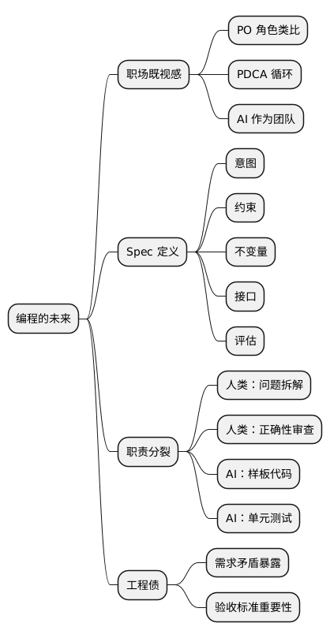

编程的未来
Posted on Thu 01 January 2026 in Journal
| Abstract | Journal on 2026-01-01 |
|---|---|
| Authors | Walter Fan |
| Category | learning note |
| Status | v1.0 |
| Updated | 2026-01-01 |
| License | CC-BY-NC-ND 4.0 |
The future of programming isn’t writing code — it’s writing specs that guide intelligence.
1. 一种奇妙的“职场既视感”
最近在使用 Cursor 结对编程时，我经常产生一种强烈的“时空穿越感”：
这感觉，怎么那么像我当年做 Product Owner（产品负责人）的时候？
回想以前我担任 Scrum PO 的日子，我们的工作节奏是标准的 PDCA：
- Plan（规划）：规划 Sprint，拆解 User Story，明确验收标准。
- Do（开发）：开发团队领任务，疯狂敲代码。
- Check（检查）：演示 Demo，跑测试，回顾哪里做得好、哪里要改。
- Act（调整）：根据反馈改进流程，进入下一个循环。
这是敏捷开发的灵魂。而如今，当 AI 辅助编程成为现实，我发现自己仿佛经历了一次“职场轮回”：
- 我：再次变回了 PO (Product Owner)。
- AI：就是那个随叫随到、不知疲倦、偶尔会幻觉但手速极快的 Scrum Team。
- 我的主要工作：不再是纠结每一个
if-else的语法，而是规划任务需求、编写 Spec（规格说明书）、并验收 AI 交付的代码。
如果你觉得 AI 写的代码烂，很有可能不是 AI 不行，而是你这个 PO 的 User Story 写得太烂了。
2. 为什么说“写 Spec”才是未来的编程？
从计算机发展史来看，编程的演进本质上就是抽象层级的不断抬高：
| 时代 | 人类主要写什么 | 机器主要做什么 |
|---|---|---|
| 汇编时代 | 具体的 CPU 指令 | 忠实执行每一条指令 |
| C 语言时代 | 算法 + 内存管理 | 帮忙管理寄存器 |
| Java/Go 时代 | 业务逻辑 + 架构 | 帮忙管理内存（GC）、线程调度 |
| 框架时代 | 配置 + 胶水代码 | 帮忙处理控制流（IoC） |
| AI 时代 | 意图（Intent）+ 约束（Constraints） | 生成实现细节 |
你发现了吗？人类正在从“实现者（Implementer）”，被动地（也是主动地）推向了“意图与边界的定义者”。
这句话听起来很虚，但它指出了一个极其残酷的现实：
以前你代码写得烂，程序只是跑不通； 现在你 Spec 写得烂，AI 会一本正经地给你跑出一个错误的系统。
3. 这里的 Spec，绝不是“随便聊两句”
很多人有一个致命的误解：“以后编程就是喝着咖啡跟 AI 聊天，说一句‘给我做一个淘宝’，它就做好了。”
大错特错。
在工程领域，自然语言是非常模糊且不可靠的。真正能指导 AI 产出高质量代码的 Spec，必须像法律条文一样严谨。它不再是写在 Confluence 里没人看的文档，它是系统的骨架。
一个合格的“AI 时代 Spec”至少包含五个维度：
- 意图（Intent）：不仅是“要做什么”，更是“为了解决什么问题”。
- 约束（Constraints）：性能指标（<100ms）、成本限制、合规边界（PII 数据脱敏）。
- 不变量（Invariants）：无论系统怎么跑，哪些事情绝对不能发生？（例如：用户余额不能为负）。
- 接口（Interfaces）：模块之间如何交互？数据契约（Contract）是什么？
- 评估方式（Evaluation）：如何判断 AI 写出来的东西是“对”的？（这里通常需要自动化测试用例）。
用一句话总结：Spec 正在从“注释”进化为系统的“核心代码”，而传统的代码正在退化为“编译产物”。
4. 编程不会消失，但会经历“有丝分裂”
在这个新范式下，工程师的职责并没有消失，而是发生了剧烈的分裂。
👨💻 人类工程师（PO/架构师）负责：
- 问题拆解：把大象装进冰箱，到底分几步？
- 系统边界：什么该做，什么不该做。
- 正确性审查：Review AI 的逻辑漏洞（Human in the loop）。
- 关键权衡（Trade-off）：在“快”和“稳”之间做决策。
🤖 智能体（Scrum Team）负责：
- 样板代码：那些写了一万遍的 CRUD。
- 胶水逻辑：把 A 库的数据转给 B 库。
- 语言迁移：把 Python 翻译成 Go。
- 单元测试：根据你的逻辑生成覆盖率 100% 的测试。
未来的编程高手，不再是那个打字速度最快的人，而是那个能最精准地向 AI 描述“即使在极端情况下，系统应该如何表现”的人。
5. 几个更锋利的视角
如果你的老板问你“AI 来了，我们还需要招聘程序员吗？”，你可以把这三句话甩在桌子上：
- 版本 1（严谨版）： > “编程的未来不是写代码，而是编写精确、可测试的规格，用来指导智能生成并演化代码。”
- 版本 2（激进版）： > “代码正在贬值为实现细节，规格（Spec）正在晋升为真正的源代码。”
- 版本 3（扎心版）： > “在 AI 时代，最重要的编程语言不是 Python 或 Java，而是约束条件（Constraints）。”
6. AI 暴露的不是能力问题，而是工程债
在实践中，我发现一个非常有意思的现象：当 AI 无法完成任务时，90% 的情况是因为我的需求本身就自相矛盾。
比如，我告诉 AI：“写一个极速的爬虫，但不要给服务器造成压力。” AI 就会懵圈：到底是要“极速”还是“不给压力”？ 这时候，我必须像 PO 一样给出具体的验收标准（Acceptance Criteria）：“并发数不超过 5，且两次请求间隔不小于 1 秒。”
AI 不是消灭了工程纪律，而是毫不留情地暴露了它的缺失。
以前我们可以一边写代码一边想需求，把逻辑漏洞藏在复杂的 if-else 里。现在 AI 只要一执行，漏洞就被放大了。
🎯 结语：未来 3-5 年的生存法则
未来的强团队和弱团队，区别会越来越大：
- 强团队：把 Spec 纳入版本控制，像 Review 代码一样 Review Prompt，把 LLM 当作一个“有反馈的高级编译器”。他们招的是“会写规格的工程师”。
- 弱团队：只把 AI 当搜索引擎，然后整天抱怨：“哎呀，这个 AI 又胡说八道了，AI 果然不靠谱。”
别只是写代码了，试着去当那个掌控全局的 PO 吧。 毕竟，指挥千军万马（AI Agents）的感觉，可比自己一行行搬砖要爽多了。
@startmindmap
* 编程的未来
** 职场既视感
*** PO 角色类比
*** PDCA 循环
*** AI 作为团队
** Spec 定义
*** 意图
*** 约束
*** 不变量
*** 接口
*** 评估
** 职责分裂
*** 人类：问题拆解
*** 人类：正确性审查
*** AI：样板代码
*** AI：单元测试
** 工程债
*** 需求矛盾暴露
*** 验收标准重要性
@endmindmap

本作品采用知识共享署名-非商业性使用-禁止演绎 4.0 国际许可协议进行许可。